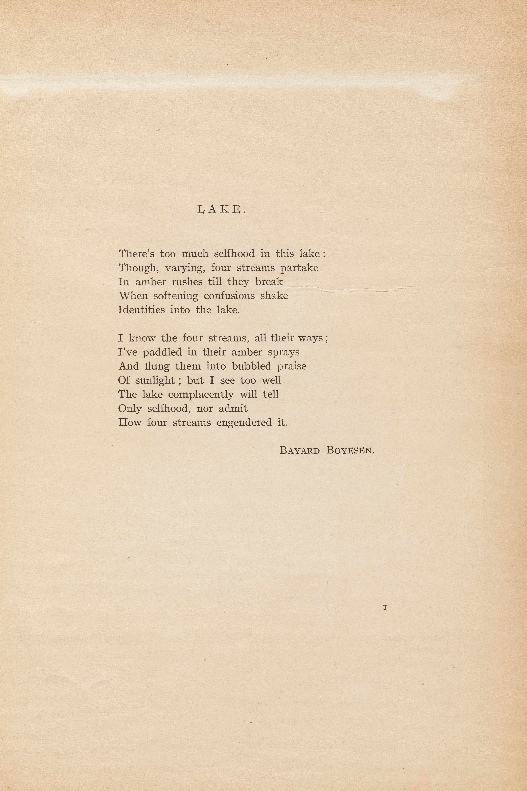

Bayard Boysen. "Lake." Broom Nov. 1921.
Page Images
- 
Plain Text
LAKE. There's too much selfhood in this lake : Though, varying, four streams partake In amber rushes till they break When softening confusions shake Identities into the lake. I know the four streams, all their ways; I've paddled in their amber sprays And flung them into bubbled praise Of sunlight; but I see too well The lake complacently will tell Only selfhood, nor admit How four streams engendered it. Bayard Boyesen.